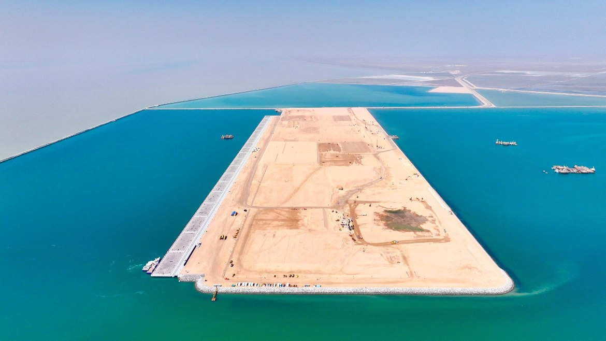
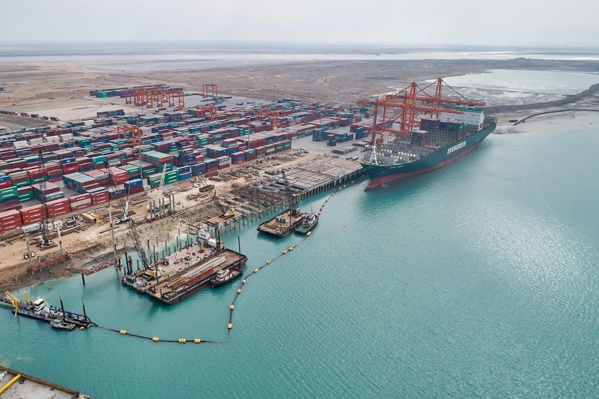

Location advantage
Assess how the governorate’s transport corridors, border access, institutions and customer base support the proposed business model.
A verified, source-led investment brief — opportunity themes, project pipeline, market-entry guidance and operating-environment notes for Basra, Iraq.
Basra concentrates the assets that decide Iraq's national income: the country's largest oil reserves and output, its principal Gulf export terminals, the new Al-Faw Grand Port and the southern anchor of the Development Road corridor. For most infrastructure, energy and logistics investors entering Iraq, the commercial case begins here.
Figures compiled from Iraq's 2024 national census, U.S. EIA, OPEC and public project announcements. Indicative — confirm current status before reliance.
The province's principal ports, oilfields and infrastructure nodes. Tap a marker for detail. Positions are approximate and for orientation only.
Coordinates from public geographic sources (Wikipedia/EIA). Schematic layout — not to scale, for orientation only.
A practical, experience-based read of the operating environment for foreign companies. Ratings are indicative and vary by sector, district and counterpart — they support planning, not a substitute for site-specific due diligence.
| Factor | Level | Note |
|---|---|---|
| Security | Medium | Functions for business; use vetted local partners and security advice, especially near ports and customs. |
| Political stability | Medium | Elected provincial council; decision-making authority can be fragmented — confirm who can commit. |
| Payments & banking | Medium | Cross-border transfers need correspondent arrangements planned in advance; documentation before, not during. |
| Permits & licensing | Medium | Investment Law No. 13 route via NIC; sector approvals and land title must be verified in writing. |
| Customs | Medium | Major port throughput but informal costs reported; strong clearing agents and clear contracts matter. |
| Labour availability | Good | Large local workforce; oil-sector and technical skills present, with expat management common. |
| Utilities & water | Constrained | Power reliability and severe water salinity are real constraints — and, for water, a structural opportunity. |
Assessment prepared by Middle East Nexus from public sources and on-the-ground experience. Ratings are directional and should be re-tested against current conditions for any specific project.

Iraq’s southern energy, ports and logistics gateway. This visual overview complements the province map, investment analysis, sector priorities and practical market-entry guidance below.

Basra is positioned as iraq’s principal maritime and hydrocarbons gateway. The map gives investors an immediate geographic reference, while the commercial lens below connects location with access, sectors and the practical checks required before committing resources.
Assess how the governorate’s transport corridors, border access, institutions and customer base support the proposed business model.
Confirm ownership, land status, approvals, financing, tender stage and the authority empowered to negotiate or award.
Choose the appropriate Iraqi legal presence, local counterpart model, tax position, security plan and delivery structure.
A source-led commercial brief for Iraq’s principal maritime, hydrocarbons and southern logistics hub. Public project announcements, official investment-map listings and active execution programmes are clearly distinguished.
Basra combines Iraq’s main Gulf access, its largest concentration of oil and gas activity, major industrial assets and the emerging Al-Faw logistics corridor. The strongest commercial themes are ports and freight, water and desalination, petrochemicals and fertiliser, pipelines, industrial rehabilitation, housing and specialised healthcare.
Official Al-Faw Port reporting states that execution of a strategic seawater desalination plant was launched in July 2025 with a total design capacity of one million cubic metres per day. The announcement identifies a live infrastructure programme, while individual subcontract and supply packages require direct confirmation.
Al-Faw Grand Port is positioned as the southern gateway of Iraq’s wider trade and Development Road strategy. Commercial opportunity extends beyond marine works to logistics parks, warehousing, customs systems, freight handling, industrial services, utilities and future shipping links.
NIC sources list major new-establishment and rehabilitation opportunities linked to the State Company for Petrochemical Industries and the Southern State Company for Fertiliser Manufacture, including large-capacity petrochemical, ammonia and nitrogen-fertiliser concepts.
Published Basra oil-and-gas listings include a petroleum-products pipeline, an LPG pipeline and a second national dry-gas pipeline, with investment or EPC+F indicated as possible delivery structures.
Official listings identify residential land and housing opportunities in Basra centre, Zubair, Safwan, the Shatt district and Umm Qasr. Plot sizes and locations are published, but legal availability and investment-licence status must be revalidated.
The Basra province page lists general hospitals, specialist cardiac, oncology, ophthalmology, fertility and surgical centres, a medical city and medical-gas related facilities as new-construction opportunities.
Official port communications describe Al-Faw as a strategic deep-water trade gateway intended to connect Iraq to regional and global supply chains. Treat downstream investment themes as a pipeline of potential packages rather than assuming every component is open for procurement.
The Iraqi government launched the execution phase in July 2025. Official reporting states a one-million-m³/day capacity, service to more than four million residents and an expected workforce impact of approximately 3,500 jobs.
The official investment map lists factories of the State Company for Petrochemical Industries as a new-establishment opportunity with a stated one-million-tonne annual capacity. Cost figures on legacy pages should be treated as indicative until reconfirmed.
NIC industrial pages identify rehabilitation or development opportunities at Basra Paper Factory, Basra Cement Factory, spiral-pipe facilities and Abu Al-Khaseeb fertiliser assets. Technical condition, concession structure and current investor status require direct diligence.
Basra rewards companies that can combine heavy-industry capability with strong logistics planning, local stakeholder coordination and realistic environmental and utility assumptions. Marine access, customs, industrial land, water availability, grid connection and interface with state-owned companies are often as important as the core technology.
Port and marine contractors; EPC and EPC+F firms; desalination and water-treatment specialists; petrochemical and fertiliser technology providers; pipeline contractors; logistics operators; industrial rehabilitation specialists; healthcare and housing developers.
Which entity sponsors the project? Is the land under the governorate, a ministry or a state company? Is the opportunity investment-law based, a public contract, partnership or EPC+F? Are feedstock, water, power and offtake arrangements documented?
Legacy opportunity listings, unclear interface responsibility, feedstock and utility assumptions, environmental approvals, port-access constraints, payment security and delays in multi-agency decisions.
Prepare a Basra-specific capability note that links technical credentials to one defined opportunity theme, then request written status confirmation from the NIC, Basra Investment Commission, General Company for Ports of Iraq or the relevant state company.
Basra city — the commercial and hydrocarbons hub — carries an "all but essential travel" designation under FCDO advice, while the wider province and areas within 30km of the Iran and Kuwait borders are designated "all travel." The southern oil sector operates extensively with international companies under established security protocols, and the presence of major operators has normalised managed operations in and around the oilfields and port areas. Commercial visitors typically work through secure logistics, controlled site access and local security coordination. Border-proximity zones, certain highways and areas outside the city require particular caution and specialist advice.
Middle East Nexus helps international companies turn a specific opportunity into a practical entry plan — with 20+ years of on-the-ground experience in Iraq since 2003.
Get in TouchIndicative positioning across capital, risk, return potential and horizon. Assessments are our own, based on current conditions.
| Opportunity | Capital | Risk | Return potential | Horizon |
|---|---|---|---|---|
| Port logistics & warehousing | Medium | Medium | ★★★★★ | 3–7 yrs |
| Petrochemicals (downstream) | High | Medium | ★★★★★ | 5–10 yrs |
| Hotels & serviced apartments | Medium | Medium | ★★★★★ | 2–5 yrs |
| Water treatment & desalination | High | Low | ★★★★★ | 5+ yrs |
| Oilfield services & supply | High | Medium | ★★★★☆ | Ongoing |
| Housing & urban services | High | Medium | ★★★★☆ | 5–10 yrs |
| Private healthcare | Medium | Low | ★★★★☆ | 5+ yrs |
| Banking & trade finance | Medium | Medium | ★★★★☆ | 3–7 yrs |
| Marine & industrial insurance | Low | Medium | ★★★★☆ | 3–5 yrs |
| Power generation | High | Medium | ★★★★☆ | 3–7 yrs |
The port and energy projects reshaping Basra's economy.
A $4.9 billion deep-water mega-port on the Faw Peninsula, built by South Korea's Daewoo, designed for 99 million tonnes a year — set to be one of the Gulf's largest and the tenth-largest port worldwide. Phase one (five berths, 3 million TEU container capacity) began operations in 2025; full build-out runs through 2038–2050. A 54 km² free-trade area is planned alongside.
ميناء عميق ضخم بقيمة 4.9 مليار دولار على شبه جزيرة الفاو، تبنيه شركة دايو الكورية الجنوبية، بطاقة تصميمية 99 مليون طن سنوياً — ليكون من أكبر موانئ الخليج وعاشر أكبر ميناء عالمياً. بدأت المرحلة الأولى (خمسة أرصفة، طاقة 3 ملايين حاوية نمطية) عملها في 2025؛ ويمتد الإنجاز الكامل حتى 2038–2050. وتُخطَّط منطقة تجارة حرة بمساحة 54 كم² إلى جانبه.
A rail-and-road corridor linking Grand Faw Port to Zakho in the Kurdistan Region and onward to Turkey and Europe — a proposed alternative to the Red Sea–Suez route. Includes the Khor al-Zubair immersed tunnel connecting Faw to Umm Qasr. Targeted for full operation around 2029–2030.
ممر بري وسككي يربط ميناء الفاو الكبير بزاخو في إقليم كردستان ومنها إلى تركيا وأوروبا — كبديل مقترح لمسار البحر الأحمر–السويس. ويشمل نفق خور الزبير الغاطس الذي يربط الفاو بأم قصر. ومستهدف تشغيله الكامل نحو 2029–2030.
A new marine pipeline at Grand Faw with a design capacity of 2.4 million barrels per day, connecting Faw storage to the Basra Oil Terminal and Khor al-Amaya export terminals, together with a large refinery — modernising Iraq's southern export infrastructure.
خط أنابيب بحري جديد في ميناء الفاو بطاقة تصميمية 2.4 مليون برميل يومياً، يربط خزانات الفاو بمحطتي تصدير ميناء البصرة النفطي وخور العمية، مع مصفاة كبيرة — لتحديث بنية التصدير الجنوبية في العراق.
Basra sits on around 70% of Iraq's proven reserves, hosting the Rumaila, West Qurna and Zubair supergiant fields operated with BP, Shell, TotalEnergies and others. Sustained demand across drilling, facilities, water handling and power generation.
تقع البصرة على نحو 70% من احتياطيات العراق المؤكدة، وتضم حقول الرميلة وغرب القرنة والزبير العملاقة التي تُشغَّل مع بي بي وشل وتوتال إنرجيز وغيرها. طلب مستدام في الحفر والمنشآت ومعالجة المياه وتوليد الطاقة.

Basra's hospitality supply sits far below its demand. For Iraq's third city — the centre of the national oil industry, home to BP, Shell and TotalEnergies operations and a constant flow of business travellers and government delegations — the city has only a handful of registered hotels and effectively one genuine five-star property, the 311-room Grand Millennium Al Seef.
Pricing reflects the shortage: three-star rooms average around $55 a night, four-star near $132, and five-star roughly $301 — a high five-star rate by Iraqi standards, which signals undersupply in the quality segment rather than premium positioning. As Grand Faw Port and the Development Road pull in more traders, contractors and project staff, that demand only deepens. The clearest openings are business hotels, serviced apartments and long-stay accommodation for project workers.
يقع عرض الضيافة في البصرة دون طلبها بكثير. فثالث مدن العراق — ومركز صناعة النفط الوطنية، ومقر عمليات بي بي وشل وتوتال إنرجيز، ووجهة تدفّق دائم لرجال الأعمال والوفود الحكومية — لا تضم سوى عدد قليل من الفنادق المسجّلة وفندق خمس نجوم حقيقي واحد فعلياً، هو غراند ميلينيوم السيف بـ311 غرفة.
وتعكس الأسعار هذا النقص: يبلغ متوسط سعر غرفة الثلاث نجوم نحو 55 دولاراً في الليلة، والأربع نجوم قرابة 132، والخمس نجوم نحو 301 — وهو سعر خمس نجوم مرتفع بالمعايير العراقية، ما يشير إلى نقص العرض في الشريحة الراقية لا إلى تموضع فاخر. ومع جذب ميناء الفاو الكبير وطريق التنمية مزيداً من التجار والمقاولين وكوادر المشاريع، يزداد هذا الطلب عمقاً. وأوضح الفرص هي الفنادق التجارية والشقق الفندقية وأماكن الإقامة طويلة الأمد لكوادر المشاريع.
Basra generates a large share of Iraq's oil revenue, yet its financial infrastructure lags well behind that wealth — and that gap is the opportunity. As Grand Faw Port comes online and international operators expand, demand rises for commercial banking, trade finance, and correspondent-banking capacity the local system currently lacks.
Insurance is especially underdeveloped. Marine and cargo cover for the port and logistics chain, industrial and energy-sector cover, and property and commercial lines are all thin relative to the scale of activity. For a bank, fintech or insurer entering now — particularly in marine and industrial insurance tied to Faw — this is a market being built rather than defended.
تولّد البصرة حصة كبيرة من عائدات النفط العراقية، لكن بنيتها المالية متأخرة كثيراً عن تلك الثروة — وهذه الفجوة هي الفرصة. فمع دخول ميناء الفاو الكبير الخدمة وتوسّع المشغّلين الدوليين، يرتفع الطلب على الخدمات المصرفية التجارية وتمويل التجارة وقدرة المصارف المراسلة التي يفتقر إليها النظام المحلي حالياً.
والتأمين ناقص التطوّر بشكل خاص. فالتغطية البحرية وتغطية الشحن للميناء وسلسلة اللوجستيات، والتغطية الصناعية وتغطية قطاع الطاقة، وفروع الممتلكات والتأمين التجاري كلها رفيعة قياساً بحجم النشاط. وبالنسبة لمصرف أو شركة تقنية مالية أو تأمين يدخل الآن — خصوصاً في التأمين البحري والصناعي المرتبط بالفاو — هذه سوق تُبنى لا تُدافَع عنها.
Basra's defining challenge is water. The Shatt — the river forming the province's eastern waterway — was once a freshwater artery and has been progressively salinized by upstream dams in Iran and Turkey, reduced flow and rising sea levels pushing Gulf water inland. During droughts, salinity has exceeded 6,000 parts per million — far beyond the WHO safe threshold — and by 2022 an estimated 40% of Basra's farmland had become unfit for cultivation. Of the region's 30 million date palms in the 1970s, fewer than a third remain.
For investors, this is not only a risk to note but a structural, long-term demand: desalination, water treatment, network rehabilitation and agricultural adaptation. It is one of the clearest and least-contested opportunities in the province, and one the market rarely frames as an investment rather than a crisis.
التحدي الأبرز للبصرة هو المياه. فشط العرب، الذي كان شرياناً للمياه العذبة، تعرّض لتملّح تدريجي بفعل السدود في إيران وتركيا، وتراجع التدفّق، وارتفاع منسوب البحر الذي يدفع مياه الخليج إلى الداخل. وخلال فترات الجفاف تجاوزت الملوحة 6,000 جزء في المليون — بعيداً عن العتبة الآمنة لمنظمة الصحة العالمية — وبحلول 2022 أصبح ما يُقدَّر بـ40% من أراضي البصرة الزراعية غير صالح للزراعة. ومن أصل 30 مليون نخلة في السبعينيات، بقي أقل من الثلث.
وبالنسبة للمستثمرين، هذا ليس خطراً يُذكر فحسب بل طلب هيكلي طويل الأمد: التحلية ومعالجة المياه وإعادة تأهيل الشبكات والتكيّف الزراعي. وهي من أوضح الفرص وأقلّها ازدحاماً في المحافظة، ونادراً ما يصفها السوق كاستثمار بدل أزمة.
Each constraint stated with the practical control that addresses it.
Basra's security environment includes armed groups operating outside full state control, whose influence extends into parts of the local economy and revenue streams, including customs. Foreign companies have faced informal payment demands. This is a structural operating reality that must be planned for through robust local partners, clear contracting and security advice — not treated as a passing detail. It is also the single factor most likely to determine how quickly Basra realises its port potential.
Grid power and municipal water are unreliable, and summer temperatures routinely exceed 50°C for months. Continuous industrial and hospitality operations should budget for independent generation, cooling and water treatment from the outset.
Over 88% of the provincial economy is oil. Non-oil ventures benefit from diversification momentum but should not assume mature supporting infrastructure; each project needs its own logistics and services planning.
Basra contributes the largest share to the federal budget yet has long been deprived of basic investment — a source of recurring protest. Investors should engage with local development priorities and communities directly, not rely solely on federal channels.
Within the next five years, Basra is positioned to become one of the most powerful ports in the Middle East. Grand Faw Port and the Development Road turn the province from a crude-export centre into a logistics and industrial gateway linking the Gulf to Europe.
The strongest opportunities sit alongside oil, not in it: downstream petrochemicals, port logistics, hotels and serviced accommodation, and — least crowded of all — water treatment and desalination, where the river salinity crisis has created structural, long-term demand.
One factor will decide how fast this potential is realised: security. Armed groups operating outside full state control still influence parts of Basra's economy and revenue, including customs, and have imposed informal costs on foreign companies. Resolving this is the province's central challenge. Companies that enter now do so with strong local partners, clear contracting, and a realistic view of that environment — and are positioned early in a market being built rather than defended.
خلال السنوات الخمس المقبلة، تتموضع البصرة لتصبح واحداً من أقوى الموانئ في الشرق الأوسط. فميناء الفاو الكبير وطريق التنمية يحوّلان المحافظة من مركز لتصدير الخام إلى بوابة لوجستية وصناعية تربط الخليج بأوروبا.
وتقع أقوى الفرص إلى جانب النفط لا فيه: البتروكيماويات التحويلية، واللوجستيات المينائية، والفنادق والإقامة الفندقية، و— الأقل ازدحاماً على الإطلاق — معالجة المياه والتحلية، حيث خلقت أزمة ملوحة شط العرب طلباً هيكلياً طويل الأمد.
وسيحدّد عامل واحد سرعة تحقيق هذه الإمكانات: الأمن. فالجماعات المسلّحة العاملة خارج السيطرة الكاملة للدولة لا تزال تؤثّر في أجزاء من اقتصاد البصرة وإيراداتها، بما فيها الجمارك، وفرضت تكاليف غير رسمية على الشركات الأجنبية. وحلّ هذا هو التحدي المركزي للمحافظة. والشركات التي تدخل الآن تفعل ذلك بشركاء محليين أقوياء وتعاقد واضح ونظرة واقعية لتلك البيئة — وتتموضع مبكراً في سوق تُبنى لا تُدافَع عنها.
The strongest opportunity themes currently identified are Oil, gas, ports, logistics, petrochemicals and industrial services. Each opportunity should still be checked with the responsible Iraqi authority because publication does not necessarily mean that a project is open, funded or ready for award.
Yes, but the appropriate structure depends on the activity, contract route and location. A foreign company may need a registered Iraqi branch or another locally compliant structure, tax registration, sector approvals and properly authorised local representation.
Confirm the project owner, land status, sponsoring authority, procurement or investment-law route, financing source, application deadline and current stage in writing before committing significant resources.
Typical risks include relying on outdated opportunity listings, unclear decision-making authority, payment and financing uncertainty, incomplete land or licence documentation, security and logistics constraints, and weak partner due diligence.
Middle East Nexus supports opportunity screening, stakeholder mapping, local partner and counterpart due diligence, meeting preparation, market-entry planning and practical coordination between international companies and Iraqi stakeholders.
Phase one — including the first berths and a 3 million TEU container capacity — began operations in 2025, with construction visibly advanced on the container handling yard and breakwater. Full build-out continues in phases through 2038 and beyond. It is an active, funded project rather than a paper plan, though timelines have shifted before and should be verified against current status.
The river has become severely salinized — exceeding 6,000 ppm in droughts and rendering about 40% of Basra's farmland unfit by 2022. This creates structural, long-term demand for desalination, water treatment and network rehabilitation. It is one of the least-contested investment areas in the province because the need is permanent, not cyclical.
Yes. For Iraq's third city and its oil capital, Basra has only a handful of registered hotels and effectively one genuine five-star property. Five-star rates near $301 a night are high by Iraqi standards, signalling undersupply rather than luxury positioning. Business hotels, serviced apartments and long-stay accommodation are the clearest gaps.
Security. Armed groups operating outside full state control influence parts of the local economy and revenue streams, including customs, and have imposed informal costs on foreign companies. This must be planned for through strong local partners, clear contracting and security advice — and is the main factor determining how quickly Basra realises its port potential.
Grand Faw Port is the southern anchor of the Development Road — a rail-and-road corridor intended to link the Gulf to Turkey and Europe as an alternative to the Red Sea–Suez route. This is what turns Basra from a crude-export centre into a logistics and industrial gateway, and underpins much of its five-year investment case.